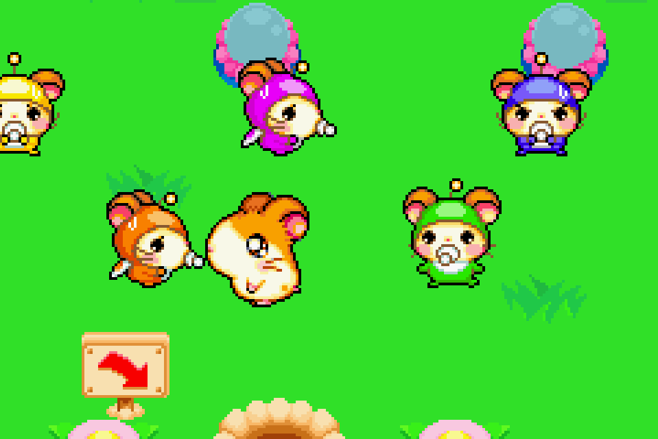
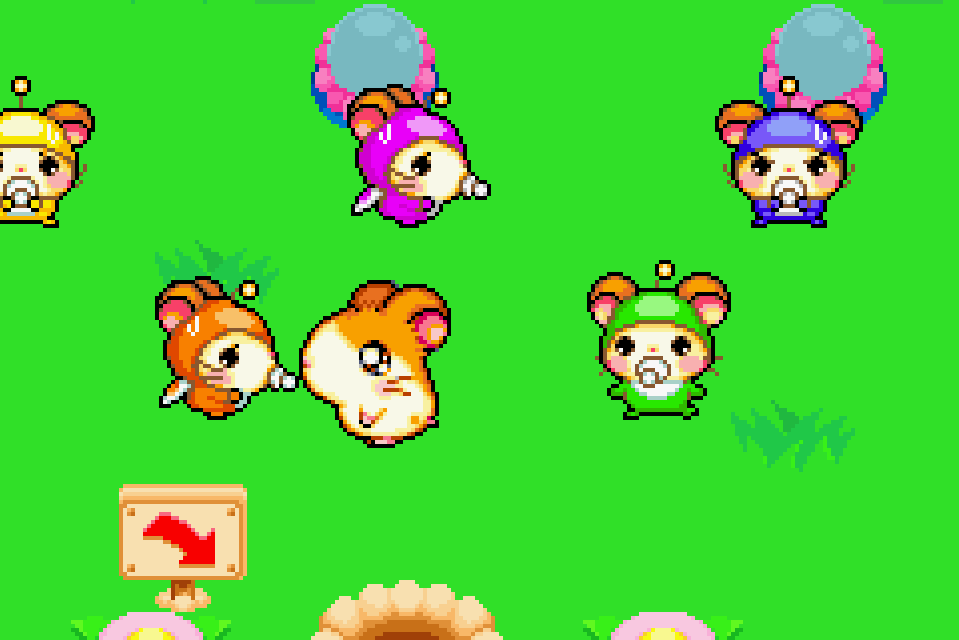

Complete on 2018-05-3
Complete on 2018-05-3
3 / 5
Release Date: Jul 27, 2004
Meta Score: 77
Complete on 2018-05-3
3 / 5
Release Date: Jul 27, 2004
Meta Score: 77
 


Hamtaro: Ham-Ham Games is a track-and-field style sports game, based on the Manga/generally cute franchise of Hamtaro, a cute hamster who has cute adventures, with his cute hamster pals.
There's another Hamtaro game on the GBA which is quite different which we'll get on to at some point.
It has a very simple plot: the hamsters are holding a tournament, and you control Hamtaro and his team of friends as they try and beat a couple of other teams, most notably the Seahams, a pirate hamster team (which I found to be an excellent concept). That's about it for story.
For the gameplay, as you might expect, it's essentially a bunch of minigames for the different sports on offer. They mostly revolve around time button presses, with some approaching a rhythm game (notably the synchronized swimming). They all seem to function well enough, but the difficulty seemed to vary widely. Some were hilariously easy, but I lost others. In the main "story" mode, you only get one shot at each event (aside from practice) and have to stick with your results.
My favorite was the carrot pulling, and least favorite were the two "tournament sports", tennis and volleyball. The bird-back riding (think equestrian) would have been good, but the collisions seemed a bit off especially on gates oriented side-on to the camera. The others were all fine, more or less.
You can wander around the tournament grounds between events, talk to other hamsters (for simple and slightly amusing dialog), and find sunflower seeds (which you also get by winning events). I think the only use for these was buying cute costumes which didn't really appeal to me.
Just playing through the events and getting to the end didn't take too long. I ended up winning about 2/3 of the gold medals overall, enough to win the tournament as a whole.
The high point of the game by far is the art. Gorgeous pixel art and animations abound throughout the game. There are a lot of unique cute hamsters in this game.
Overall, a nice enough game if a little simple, saccharine sweet, and short.